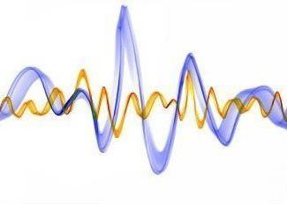
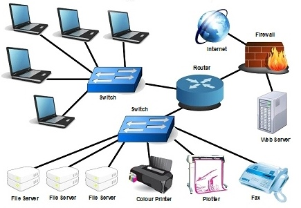
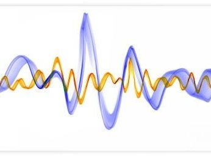
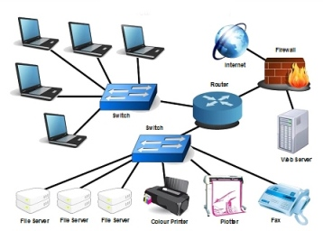

Toggle navigation
HOME
Event Proceedings
EVENT PROCEEDINGS
TRACK 1
COMMUNICATION SYSTEMS

TRACK 2
SIGNAL PROCESSING

TRACK 3
COMPUTER NETWORKS
Abstract Book
Extra Information
Track 1
COMMUNICATION SYSTEMS
Design and Hardware Implementation of Reconfigurable Nano Satellite Communication System Using FPGA Based SDR for FM/FSK Demodulation and BPSK Modulation
Noise Variance Estimation Through Penalized Least-Squares for ED-Spectrum Sensing
Efficient Implementation of Parallel Concatenated Gallager Codes with Single Encoder
Extended Gaussian Function based Adaptive Filter Design for Filter Bank Multicarrier Systems
Determination of Propagation Constant Using 1D-FDTD with MATLAB
Performance Analysis of Fast Convolution Based FBMC-OQAM System
ANALYSIS OF MODE OF PROPAGATION IN SUBSTRATE INTEGRATED WAVEGUIDE USING FDTD
Transmit Precoding with Encoding using Zadoff-Chu Sequence for MIMO-OFDM System
Compressive beamforming using greedy algorithms
SoC Implementation of a Modulation Classification module for Cognitive Radios
Worm Hole-Black Hole attack Detection and Avoidance in Manet with Random PTT using FPGA
Frequency Offset Estimation of WiMAX using Repeated Preamble
Design and Development of a Dual Directional Coupler with Transformers for HF band applications
Comparative Analysis of Offset Estimation Capabilities in Mathematical Sequences for WLAN
Analysis of Carrier Frequency Offset in WFRFT-OFDM Systems using MLE
Modeling of Broadband Power Line Communication in last-mile networks
Compact Multiband Microstrip Patch Antenna For Wireless Applications
Energy Detection of Unknown Signals with Diversity Reception in λ − μ Fading Channel
Utility Maximization of Three Phase Spectrum Leasing Scheme Using Stackelberg Game
Multi-channel Hexagonal Surface Coils for 1.5T MRI Scanner
Design Of L Band Cavity Filter For GPS Receiver
Close
Track 2
SIGNAL PROCESSING

Blood Vessel Segmentation In Fundus Images And Detection Of Glaucoma
Advanced Algorithm for Polyp Detection Using Depth Segmentation in Colon Endoscopy
Multistructure Brain Registration Using Multimodal Neuroimaging for the Detection of Alzheimer’s Disease
ROI Lossless Colored Medical Image Watermarking Scheme with Secure Embedding of Patient Data
Advanced Earlier Melanoma Detection Algorithm Using Colour Correlogram
An Accurate Method of Breast Cancer Detection from Ultra Sound images Using Probabilistic Fuzzy Clustering Algorithm
A Semi-Automated Technique for Vertebrae Detection and Segmentation from CT Images of Spine
Myocardial Infarction Detection Using Hybrid BSS Method
Multimodal Face Recognition using Spectral Transformation by LBP and Polynomial Coefficients
Multi-focus Color Image Fusion using NSCT and PCNN
Single Shot High Dynamic Range Imaging using Power Law Transformation and Exposure Fusion
Robust Multiview Registration of Point Clouds
Face Recognition and Authentication using LBP and BSIF
Facial expression recognition and gender classification using facial patches
3D Face Reconstruction by Pose Correction, Patch Cloning and Texture Wrapping
Spatial Resolution Enhancement Of Hyperspectral Image By Negative Abundance Oriented Spectral Unmixing
Wavelet-Based Marker Controlled Watershed Transformation
A Novel Shadow Removal Algorithm Using Niblack Segmentation in Satellite Images
Performance Evaluation of Feature Extraction Techniques on Natural Image Prior in Visual Image Reconstruction
Shearlet Transform Based Image Denoising Using Histogram Thresholding
A Robust Video Denoising System Using Optimised Surfacelet Transform
Estimation of Vocal Tract Shape of Vowels for Children
Performance Analysis of CELP Codec for Gaussian and Fixed Codebooks
Audio Watermarking Technique using Modified Discrete Cosine Transform
Close
Track 3
COMPUTER NETWORKS

Decision Tree Based Rules for Entity Identification
RULE BASED METHOD FOR ENTITY RESOLUTION USING DISTINCT TREE CONSTRUCTION
Close
INFO
Abstract Book
Close